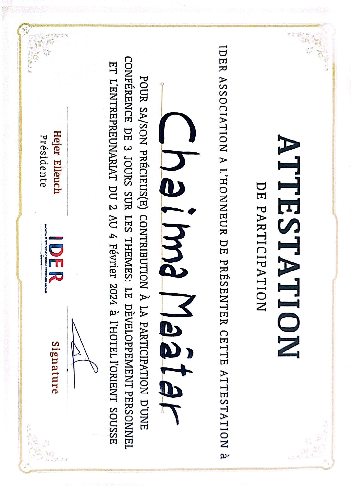
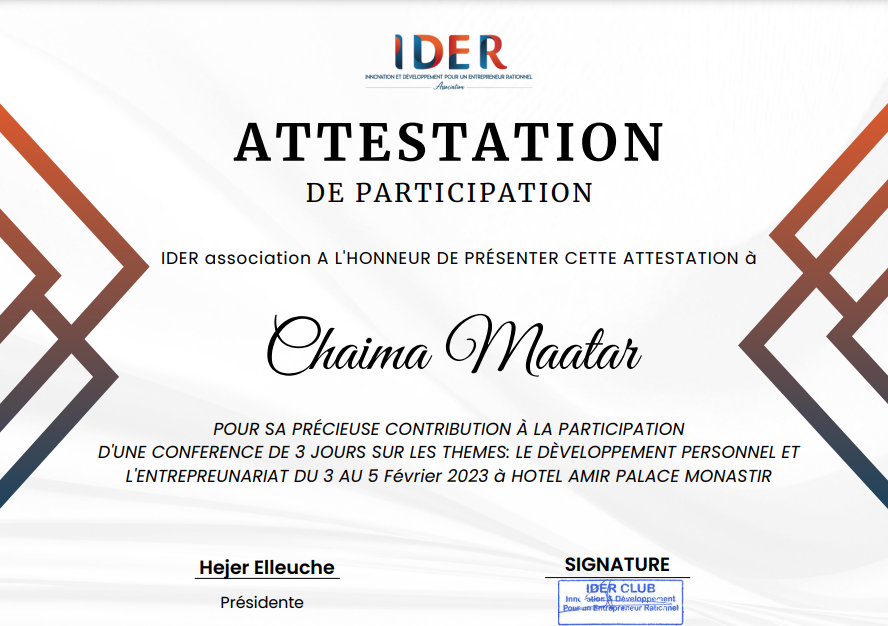
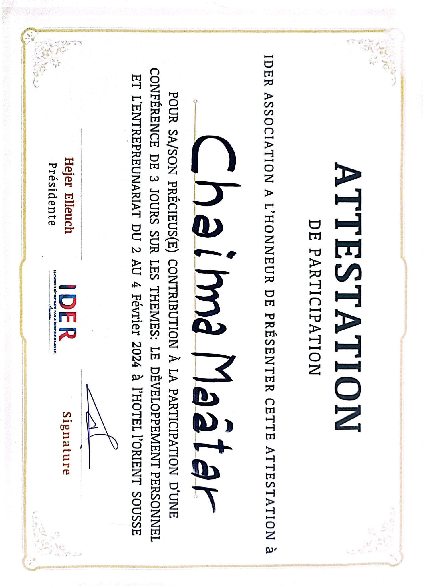
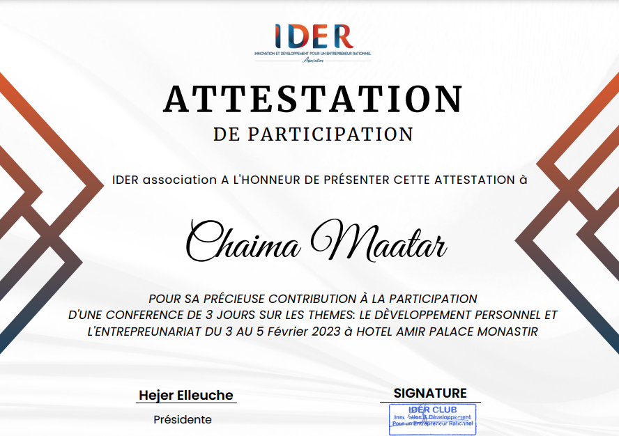

Manifestations
Journée Porte Ouverte ISIMS 2023
Lors de la Journée Portes Ouvertes organisée en 2023 par l'Institut Supérieur d'Informatique et de Multimédia de Sfax, j'ai fait partie de l'équipe d'organisation. Cet événement a permis de renforcer les liens entre les étudiants et les professionnels, tout en mettant en avant l'orientation de l'ISIMS vers l’alignement des contenus de ses formations avec les besoins du marché.
Trésorière du Club IDER ISIMS
En tant que membre bureau du club IDER (Innovation et Développement pour un Entrepreneur Rationnel), j'ai participé à l'organisation et à la gestion financière de plusieurs événements :
Stand à l'ISIMS
Organisation de stands à l'Institut pour promouvoir les activités du club IDER, accueillir les étudiants et présenter nos initiatives.

Journées d'Intégration
Journées destinées à intégrer les nouveaux membres, comprenant des jeux, des sessions d'information et des activités pour favoriser la cohésion du groupe.


Business Academy
Un événement immersif offrant une simulation réaliste de la gestion d'une entreprise à travers un jeu stratégique en ligne. Cette activité a permis aux participants de prendre des décisions clés dans divers domaines stratégiques tels que le marketing, les finances, la production et les ressources humaines, tout en évoluant dans un environnement concurrentiel.
Solidarité pour la Palestine
Au sein des instituts du Technopole de Sfax, et en collaboration avec le Croissant-Rouge Tunisien, nous avons organisé une action solidaire visant à collecter des fonds en faveur de la Palestine. Cet événement a rassemblé étudiants, enseignants et personnels administratifs, mettant en lumière une véritable dynamique collective et un engagement commun autour d’une noble cause humanitaire.
IDE'CO
Plus de 150 membres d'IDER, issus de différentes institutions universitaires de Sfax, ont participé à ce forum organisé dans le cadre de la conférence IDECO. Cet événement, d’une durée de trois jours et tenu dans un hôtel, avait pour objectif de renforcer l’intégration des membres au sein de l’association tout en développant leurs compétences personnelles. À travers des ateliers de formation, des activités pédagogiques et des jeux interactifs, IDECO a créé un environnement propice à l’apprentissage, au partage et à la collaboration. Ce rassemblement a permis aux participants de tisser des liens, d’explorer de nouvelles idées et de consolider leur esprit d’équipe dans une ambiance dynamique et enrichissante.

 




Participations à des Formations avec IDER
En tant que membre actif du club IDER, j’ai eu l’opportunité de participer à plusieurs formations enrichissantes. Ces sessions m’ont permis de développer à la fois mes compétences personnelles, telles que la communication et le travail en équipe, ainsi que mes compétences professionnelles, en m’aidant à m'intégrer davantage dans la vie professionnelle.